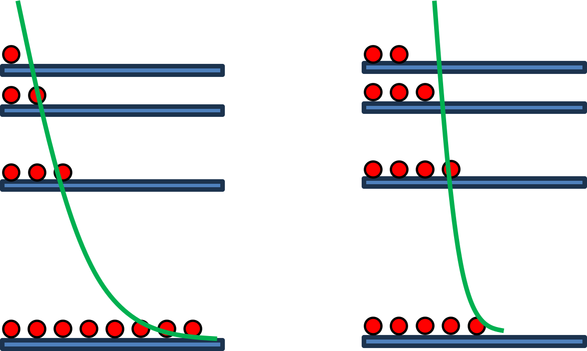
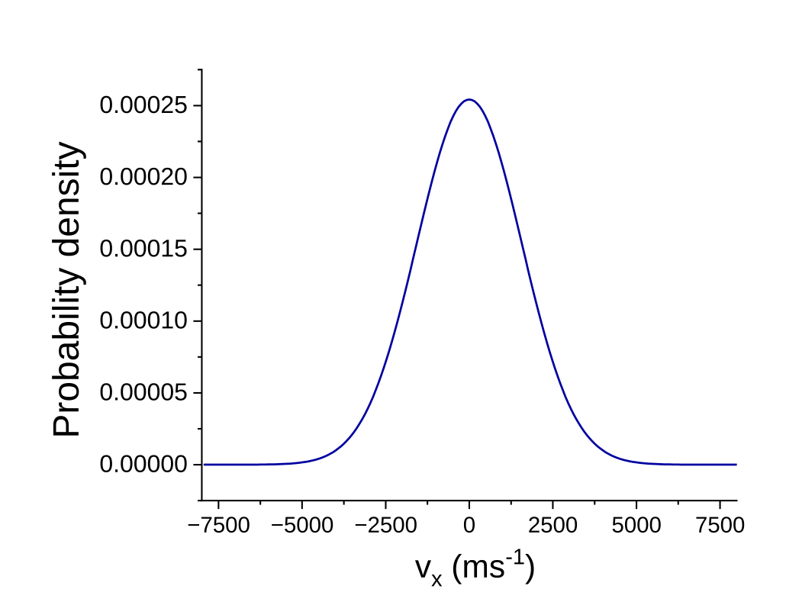
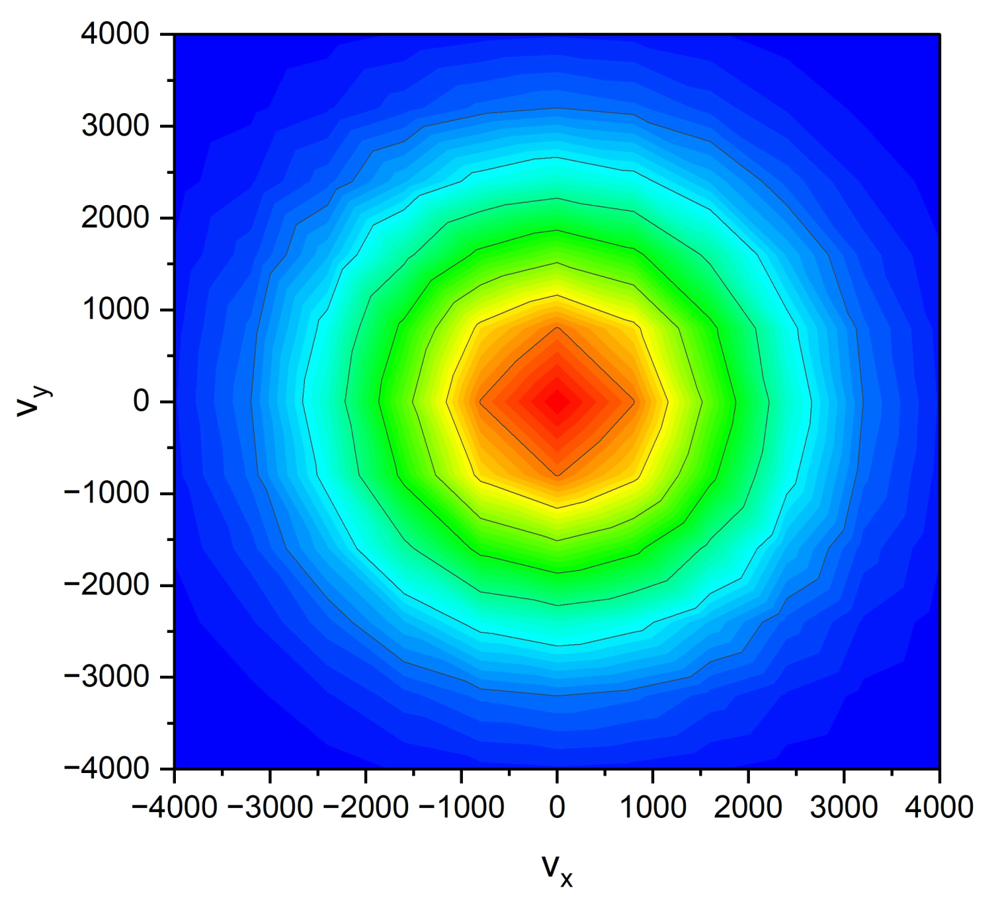
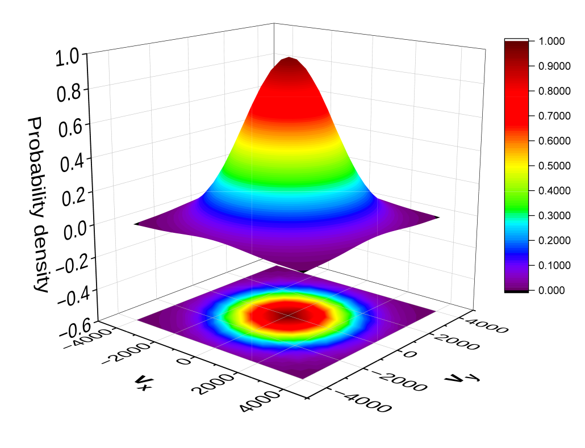
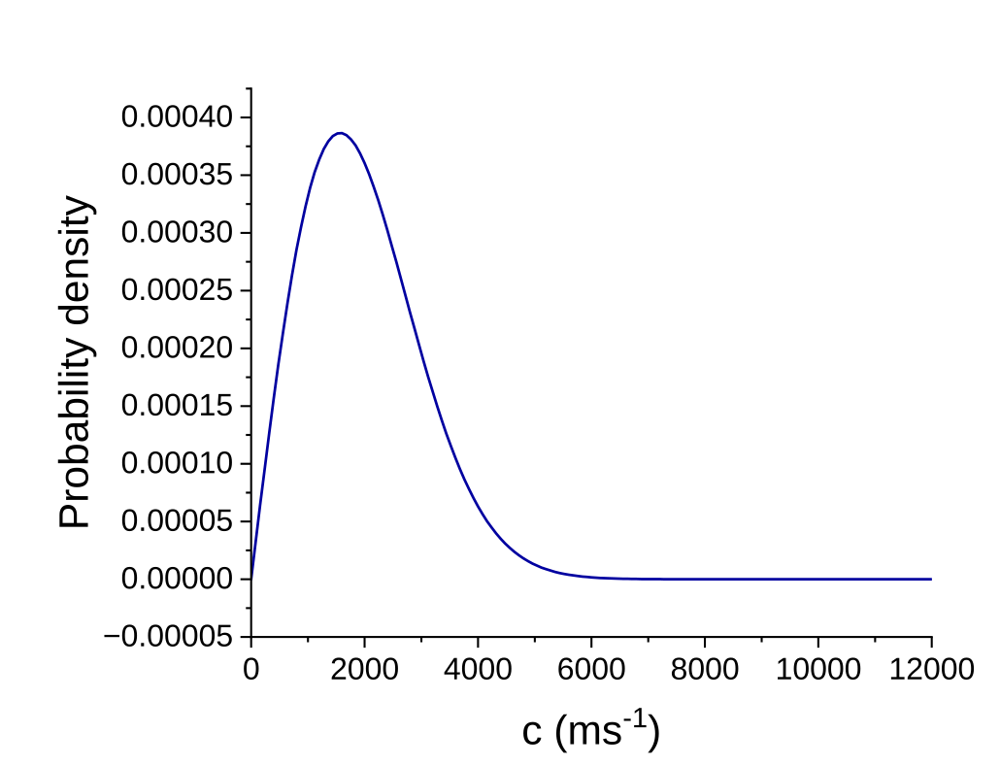
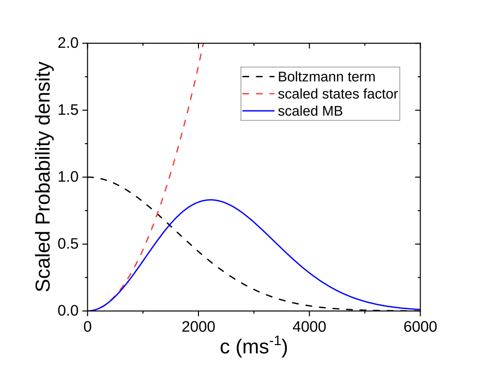
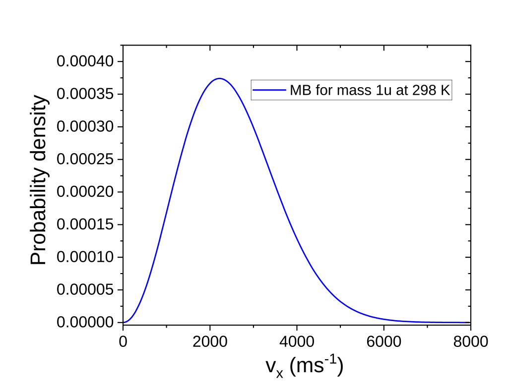

4 Kinetic Theory of Gases
4.1 Learning outcomes
After studying this chapter, you should be able to:
- derive the pressure of a dilute gas from elastic molecular collisions with a wall;
- distinguish velocity (a signed vector component) from speed (a non-negative magnitude);
- explain the Boltzmann factor and the meaning and units of a probability density;
- derive the one-dimensional Maxwell–Boltzmann velocity distribution using Gaussian normalisation;
- obtain two- and three-dimensional speed distributions from the geometry of velocity space;
- explain why the number of states is associated with the measure of a velocity-space shell, rather than a literal count of points;
- calculate the mean, most probable and root-mean-square speeds, and connect the distributions to average kinetic energy.
The ideal-gas equation of state, temperature and introductory equipartition were introduced in Chapter 3; this chapter develops their microscopic statistical foundation.
4.2 From molecular collisions to pressure
An ideal gas is modelled as a very large number of molecules undergoing random motion. For the simplest kinetic derivation, assume that molecules are point-like compared with their average separation, move freely between collisions, and collide elastically with the container walls. Intermolecular collisions redistribute velocities but do not alter the equilibrium result.
Consider a rectangular container of length \(L\) in the \(x\) direction, with wall area \(A\) and volume \(V=AL\). A molecule of mass \(m\) approaches a wall with velocity component \(v_x>0\). On elastic reflection, its \(x\) momentum changes from \(mv_x\) to \(-mv_x\), so the magnitude of momentum transferred to the wall is
\[ \Delta p_{\mathrm{wall}}=2mv_x. \]
If the molecule travels back and forth between opposite walls, the interval between successive collisions with the same wall is \(\Delta t=2L/v_x\). Its mean force contribution is therefore
\[ F_x=\frac{2mv_x}{2L/v_x}=\frac{mv_x^2}{L}. \]
For \(N\) molecules with different velocities, the mean total force is
\[ F=\frac{m}{L}\sum_{i=1}^{N}v_{x,i}^2 =\frac{Nm}{L}\langle v_x^2\rangle. \]
Dividing by the area gives
\[ P=\frac{F}{A}=\frac{Nm}{V}\langle v_x^2\rangle. \]
Random motion in an equilibrium gas is isotropic: no Cartesian direction is preferred. Consequently,
\[ \langle v_x^2\rangle=\langle v_y^2\rangle=\langle v_z^2\rangle, \qquad \langle c^2\rangle=3\langle v_x^2\rangle, \]
where \(c=\sqrt{v_x^2+v_y^2+v_z^2}\) is the molecular speed. We obtain the fundamental kinetic-theory result
\[ \boxed{PV=\frac13Nm\langle c^2\rangle.} \tag{4.1} \]
Comparing this with the ideal-gas equation \(PV=Nk_{\mathrm B}T\) yields
\[ \boxed{\frac12m\langle c^2\rangle=\frac32k_{\mathrm B}T.} \tag{4.2} \]
Thus the average translational kinetic energy of a molecule in a classical equilibrium gas is \(3k_{\mathrm B}T/2\). The result does not imply that every molecule has the same speed.
The mean velocity component \(\langle v_x\rangle\) is zero in a stationary equilibrium gas because positive and negative velocities balance. The mean square \(\langle v_x^2\rangle\) is positive. Pressure depends on the latter, not the former.
4.3 The Boltzmann factor
At thermal equilibrium, the relative statistical weight of a classical state with energy \(E\) is proportional to
\[ e^{-E/(k_{\mathrm B}T)}. \]
The normalisation constant is determined by requiring the total probability to equal one. For a freely moving molecule,
\[ E_{\mathrm{kin}}=\frac12m(v_x^2+v_y^2+v_z^2). \]
For a gas in an external potential \(U(\mathbf r)\), the energy is \(E=E_{\mathrm{kin}}+U(\mathbf r)\). When the kinetic and position-dependent parts separate, the equilibrium velocity distribution is still Maxwellian at a fixed temperature; the potential instead influences the spatial density.

The Boltzmann factor alone is not the speed distribution. To obtain a speed distribution we must also account for the volume of velocity space corresponding to a given interval of speeds.
4.4 Probability and probability density
Speed is a continuous variable. A probability-density function \(f(c)\) is defined so that
\[ \Pr(c_1\leq c\leq c_2)=\int_{c_1}^{c_2}f(c)\,dc. \]
For a narrow interval, \(dP=f(c)\,dc\). The density \(f(c)\) has units of inverse speed, \(\mathrm{s\,m^{-1}}\), while \(dP\) is dimensionless. For an ideal continuous distribution, the probability of any one exact speed is zero: \(\Pr(c=c_0)=0\). This does not make that speed impossible; a nonzero probability belongs to a finite interval.
The same principle applies to a signed velocity component \(v_x\):
\[ \Pr(a\leq v_x\leq b)=\int_a^b f_x(v_x)\,dv_x. \]
Graph labelling: use Probability density on the vertical axis for both the 1D velocity distribution and the 2D/3D speed distributions. Label the horizontal axis Velocity component \(v_x\) for 1D and Speed \(c\) for 2D/3D.
4.5 The one-dimensional Maxwell–Boltzmann velocity distribution
For motion in the \(x\) direction, the kinetic energy is \(mv_x^2/2\). The probability density therefore has the form
\[ f_x(v_x)=A\exp\!\left(-\frac{mv_x^2}{2k_{\mathrm B}T}\right). \]
To find \(A\), require \(\int_{-\infty}^{\infty}f_x(v_x)\,dv_x=1\). Using the standard Gaussian integral
\[ \int_{-\infty}^{\infty}e^{-\alpha x^2}\,dx=\sqrt{\frac{\pi}{\alpha}},\qquad\alpha>0, \]
with \(\alpha=m/(2k_{\mathrm B}T)\), we obtain
\[ \boxed{f_x(v_x)=\sqrt{\frac{m}{2\pi k_{\mathrm B}T}} \exp\!\left(-\frac{mv_x^2}{2k_{\mathrm B}T}\right).} \tag{4.3} \]

The distribution is Gaussian and symmetric about \(v_x=0\). Therefore \(\langle v_x\rangle=0\). To calculate the mean-square velocity, use
\[ \langle v_x^2\rangle=\int_{-\infty}^{\infty}v_x^2f_x(v_x)\,dv_x. \]
With
\[ \int_{-\infty}^{\infty}x^2e^{-\alpha x^2}\,dx =\frac{\sqrt\pi}{2\alpha^{3/2}}, \]
we find
\[ \boxed{\langle v_x^2\rangle=\frac{k_{\mathrm B}T}{m}}, \qquad \boxed{\frac12m\langle v_x^2\rangle=\frac12k_{\mathrm B}T.} \]
This is one translational quadratic degree of freedom. The mean speed in one dimension is not \(\sqrt{\langle v_x^2\rangle}\): the latter is a root-mean-square quantity. If we use \(c=|v_x|\) in 1D, the speed density is \(f_{|v_x|}(c)=2f_x(c)\) for \(c\geq0\).
4.6 Two-dimensional velocities and the polar-coordinate Jacobian
In two dimensions, the joint velocity density is the product of two independent Gaussian component densities:
\[ p(v_x,v_y)=\frac{m}{2\pi k_{\mathrm B}T} \exp\!\left[-\frac{m(v_x^2+v_y^2)}{2k_{\mathrm B}T}\right]. \]
Introduce polar coordinates in velocity space:
\[ v_x=c\cos\theta,\qquad v_y=c\sin\theta. \]
The Jacobian matrix is
\[ J=\begin{pmatrix} \partial v_x/\partial c & \partial v_x/\partial\theta\\ \partial v_y/\partial c & \partial v_y/\partial\theta \end{pmatrix} =\begin{pmatrix} \cos\theta & -c\sin\theta\\ \sin\theta & c\cos\theta \end{pmatrix}. \]
Its determinant is \(\det J=c(\cos^2\theta+\sin^2\theta)=c\), so
\[ \boxed{dv_x\,dv_y=c\,dc\,d\theta.} \tag{4.4} \]
Geometrically, a thin annular sector has radial thickness \(dc\) and arc length \(c\,d\theta\), giving area \(c\,dc\,d\theta\). Integrating over all directions, \(0\leq\theta<2\pi\), gives the area of a complete thin annulus:
\[ dA=\int_0^{2\pi}c\,dc\,d\theta=2\pi c\,dc. \]


Thus the 2D speed probability density is
\[ \begin{aligned} f_{2\mathrm D}(c) &=\int_0^{2\pi}p(c\cos\theta,c\sin\theta)c\,d\theta\\ &=\boxed{\frac{m}{k_{\mathrm B}T}c \exp\!\left(-\frac{mc^2}{2k_{\mathrm B}T}\right)},\qquad c\geq0. \end{aligned} \tag{4.5} \]

Every circle contains infinitely many points, and a one-to-one mapping exists between circles of different radii. The relevant concept is measure, not the cardinality of the sets of points. Equal-width annuli at larger speed occupy larger areas in velocity space. The Jacobian accounts for that area, and hence for the probability weight associated with a finite speed interval.
For two independent translational degrees of freedom, \(\langle c^2\rangle=\langle v_x^2\rangle+\langle v_y^2\rangle=2k_{\mathrm B}T/m\), giving \(\langle E_{\mathrm{kin}}\rangle=k_{\mathrm B}T\).
4.7 The three-dimensional Maxwell–Boltzmann speed distribution
In three dimensions, the joint density is
\[ p(v_x,v_y,v_z)=\left(\frac{m}{2\pi k_{\mathrm B}T}\right)^{3/2} \exp\!\left[-\frac{m(v_x^2+v_y^2+v_z^2)}{2k_{\mathrm B}T}\right]. \]
Now use spherical polar coordinates in velocity space. The volume element is
\[ dv_x\,dv_y\,dv_z=c^2\sin\theta\,dc\,d\theta\,d\phi. \]
Integration over all directions yields
\[ \int_0^{2\pi}\!d\phi\int_0^\pi\!\sin\theta\,d\theta=4\pi. \]
The thin spherical shell between speeds \(c\) and \(c+dc\) has velocity-space volume \(4\pi c^2dc\). Hence
\[ \boxed{f_{3\mathrm D}(c)=4\pi\left(\frac{m}{2\pi k_{\mathrm B}T}\right)^{3/2} c^2\exp\!\left(-\frac{mc^2}{2k_{\mathrm B}T}\right)},\quad c\geq0. \tag{4.6} \]


The \(c^2\) factor comes from the growing shell volume; the exponential factor suppresses high kinetic energies. Their competition produces a maximum at a nonzero speed. Increasing temperature broadens the distribution and shifts the maximum to higher speed while preserving total area equal to one.
4.8 Three characteristic molecular speeds
The most probable speed is the location of the maximum of \(f_{3\mathrm D}(c)\). Since constants do not affect the maximum, differentiate \(c^2e^{-mc^2/(2k_{\mathrm B}T)}\):
\[ \frac{d}{dc}\left(c^2e^{-mc^2/(2k_{\mathrm B}T)}\right) =e^{-mc^2/(2k_{\mathrm B}T)}\left(2c-\frac{mc^3}{k_{\mathrm B}T}\right). \]
The nonzero stationary point is
\[ \boxed{c_{\mathrm{mp}}=\sqrt{\frac{2k_{\mathrm B}T}{m}}.} \tag{4.7} \]
The mean speed is the expectation \(\langle c\rangle=\int_0^\infty cf_{3\mathrm D}(c)\,dc\):
\[ \boxed{\langle c\rangle=\sqrt{\frac{8k_{\mathrm B}T}{\pi m}}.} \tag{4.8} \]
The root-mean-square speed is obtained from the average of the square:
\[ \boxed{c_{\mathrm{rms}}=\sqrt{\langle c^2\rangle} =\sqrt{\frac{3k_{\mathrm B}T}{m}}.} \tag{4.9} \]
Thus
\[ c_{\mathrm{mp}}<\langle c\rangle<c_{\mathrm{rms}}. \]
All three scale as \(\sqrt{T/m}\). A lighter molecule at the same temperature typically moves faster.
4.8.1 Worked example: nitrogen at room temperature
For nitrogen molecules, take \(m=28u\approx4.65\times10^{-26}\,\mathrm{kg}\) and \(T=300\,\mathrm K\), with \(k_{\mathrm B}=1.380649\times10^{-23}\,\mathrm{J\,K^{-1}}\). Then
\[ c_{\mathrm{mp}}\approx422\,\mathrm{m\,s^{-1}},\quad \langle c\rangle\approx476\,\mathrm{m\,s^{-1}},\quad c_{\mathrm{rms}}\approx517\,\mathrm{m\,s^{-1}}. \]
These values describe different statistical summaries of the same distribution. None represents the speed of every molecule.
4.9 Interpreting the distributions and their limits
- The 1D velocity component density is a symmetric Gaussian, with its maximum at zero.
- The 2D and 3D speed densities are zero at \(c=0\) because a vanishingly small annulus or spherical shell has vanishing measure there.
- The 2D and 3D curves are not Gaussian distributions of speed.
- The Maxwell–Boltzmann model applies to a classical, non-relativistic gas in thermal equilibrium. Quantum-degenerate gases require Bose–Einstein or Fermi–Dirac statistics; sufficiently high speeds require a relativistic treatment.
4.10 Problems
- Pressure from collisions. A dilute monatomic gas contains \(N\) molecules of mass \(m\) in volume \(V\). Derive \(PV=Nm\langle c^2\rangle/3\) by considering momentum transfer to a wall. State explicitly where isotropy enters.
- Gaussian normalisation. Starting with \(f_x(v_x)=Ae^{-mv_x^2/(2k_{\mathrm B}T)}\), determine \(A\) and show that \(\langle v_x^2\rangle=k_{\mathrm B}T/m\).
- Speed versus velocity. Explain why the 1D velocity-component distribution has its maximum at \(v_x=0\), whereas the 3D speed distribution has its maximum at a nonzero \(c\).
- Jacobian. Derive \(dv_xdv_y=c\,dc\,d\theta\) and use it to obtain the 2D speed distribution. Explain why a one-to-one mapping between circles does not invalidate the annular-area argument.
- Most probable speed. Differentiate the 3D speed density to obtain \(c_{\mathrm{mp}}\). Compare it with \(c_{\mathrm{rms}}\).
- Temperature scaling. By what factor do \(c_{\mathrm{mp}}\), \(\langle c\rangle\) and \(c_{\mathrm{rms}}\) change when absolute temperature is quadrupled?
- Probability interval. Write the integral that gives the probability of a nitrogen molecule at \(300\,\mathrm K\) having speed between \(300\) and \(500\,\mathrm{m\,s^{-1}}\). Explain why the vertical-axis label must be probability density rather than probability.
Worked solutions are available separately.
4.11 Further reading
For the statistical-mechanical background, consult the sections on the Boltzmann distribution, ideal gases and molecular speeds in Blundell & Blundell, Concepts in Thermal Physics, or Kittel & Kroemer, Thermal Physics.